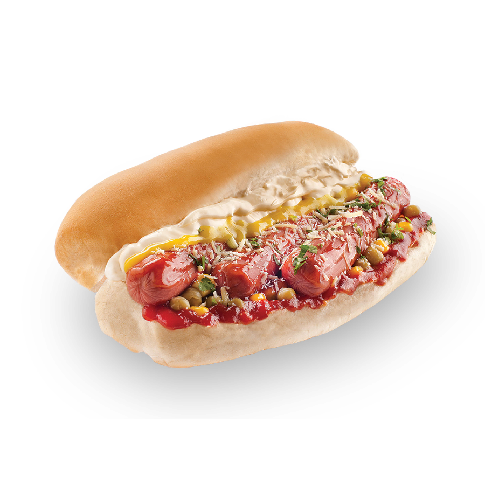
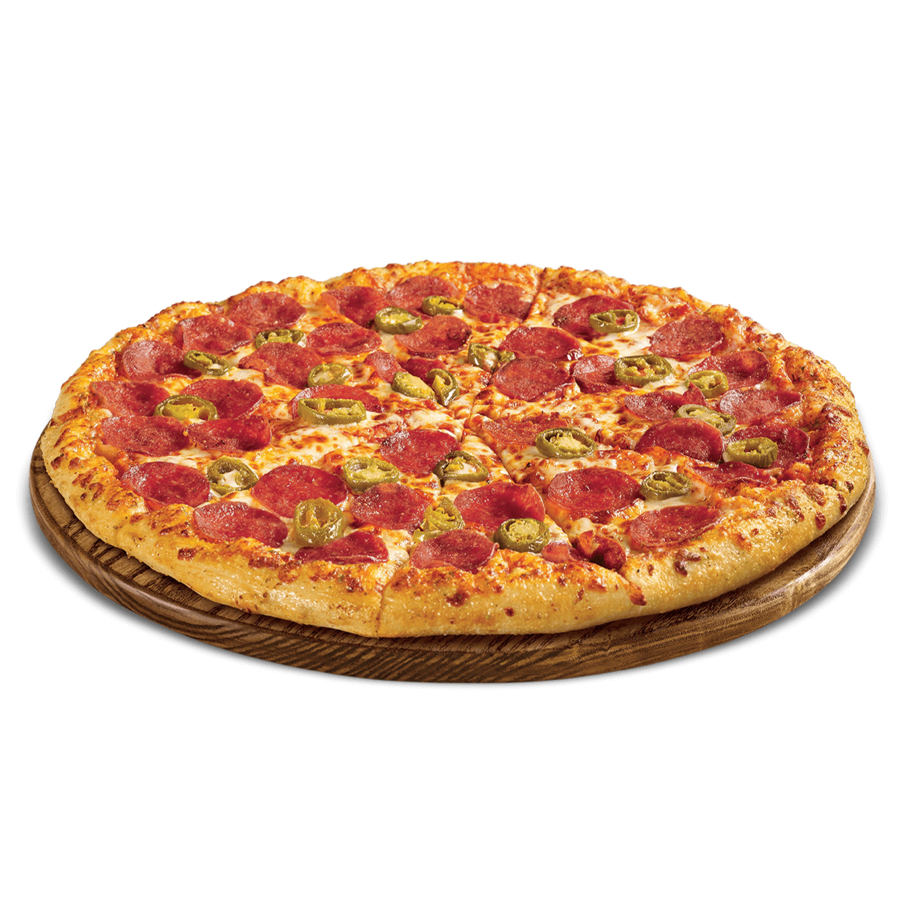
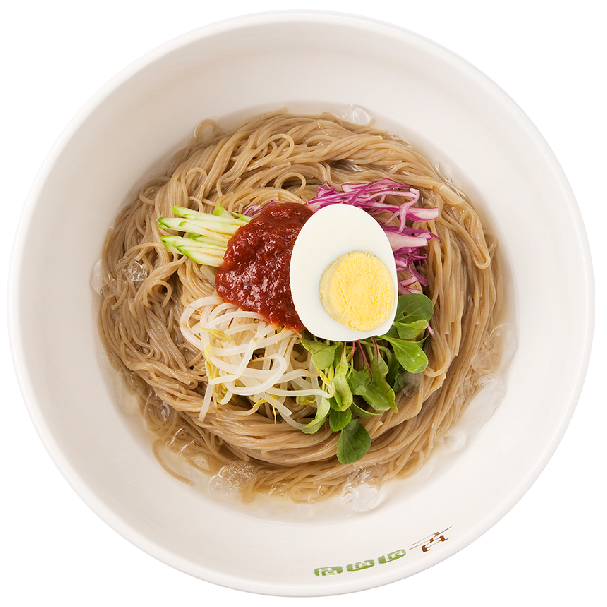

Meal Time
00
:
00
RECEIPT
Receipt for your eye-eating.
Drag the amount you ate.
Hot dog
0kcal
Up to here
Hamburger
0kcal
Up to here
Pizza
0kcal
Up to here
Doughnut
0kcal
Up to here
Tteokboki
0kcal
Up to here
Ramen
0kcal
Up to here
Kimchi Fried Rice
0kcal
Up to here
Western
양식
Korean
한식
Chinese
중식
Japanese
일식
Dessert
디저트

Hotdog
핫도그
가래떡을 적당한 크기로 잘라 여러 가지 채소를 넣고 양념을 하여 볶은 음식. 양념은 간장으로 하기도 하고, 고추장으로 하기도 한다.
Hamburger
햄버거
햄버거는 샌드위치의 일종인 음식이다. 동그랗거나 길쭉한 빵 사이에 넣어 만들며, 보통 손으로 쥐면서 들고 먹는다.
Doughnut
도넛
도넛은 소맥분에 설탕, 버터, 달걀 등을 혼합하고 기름으로 튀긴 식품이다.도넛은 작은 전문점이나, 카페테리아 등에서 판매된다.

Pizza
피자
밀가루 반죽 위에 토마토 소스, 모차렐라 치즈를 얹어서 둥글고 납작한 형태로 구운 빵으로, 다양한 종류의 토핑을 선택하여 얹을 수 있다.
Tteok-bokki
떡볶이
가래떡을 적당한 크기로 잘라 여러 가지 채소를 넣고 양념을 하여 볶은 음식. 양념은 간장으로 하기도 하고, 고추장으로 하기도 한다.
Ramen
라면
라면은 기름에 미리 튀긴 국수를 후레이크와 스프와 함께 끓는 물에 넣어서 요리하는 국수 식품이자 인스턴트 식품이다.
Spicy Seafood Stew
해물뚝배기
갖가지 싱싱한 해물과 된장을 풀어 넣고 끓여 바다내음이 물씬 풍기며 담백하고 시원한 맛이 일품으로 최고의 속풀이 해장국으로 손꼽힌다.
Kimchi Fried Rice
김치볶음밥
김치볶음밥은 한국의 대중적인 요리의 하나이자 볶음밥의 일종으로서 김치와 밥을 주재료로 프라이팬 등에서 볶은 요리다.
Bibimbap
비빔밥
비빔밥은 대표적인 한국 요리의 하나로, 밥에 고기나 나물, 달걀 등과 고추장, 참기름 등 양념을 넣고 비벼서 섞어 먹는 음식이다.
Pork belly
삼겹살
삼겹살은 돼지의 갈비에 붙어 있는 살을 구운 한국 음식으로 비계와 살이 세 겹으로 되어 있는 것처럼 보이는 고기이다.

Buckwheat Noodles
막국수
막국수는 삶은 메밀국수에 김치와 무, 오이를 넉넉히 얹고 비빔 양념장을 넣어 한데 비벼 먹는 국수로 만든 향토 음식이다.
Kimchi Pancake
김치부침개
밀가루 반죽에 잘 익은 김치를 송송 썰어 넣고 부친 전이다.식사 시 전채로 먹거나, 간식, 술안주, 혹은 반찬으로 먹는다.
Spicy soft tofu soup
순두부찌개
순두부찌개는 순두부를 주재료로 한 한국 요리의 찌개이다. 때에 따라 달걀이나 버섯, 후춧가루, 고추기름 등을 넣기도 한다.
Black-bean-sauce noodles
짜장면
짜장면은 양파 등의 채소와 돼지고기와 춘장을 식용유와 함께 볶은 양념을 국수에 비벼서 먹는 한국식 중국 요리이다.
Chinese style noodles with vegetables and seafood
짬뽕
채소와 돼지고기, 해물 등을 기름에 볶아 닭이나 돼지뼈로 만든 육수를 넣고 끓인 국물에 삶은 국수를 말아서 먹는 중국음식이다.
sources
https://www.ebiga.co.kr/main/menu
http://bonworld.co.kr/
index.php?mid=brend_menu&category=224&listStyle=viewer&document_srl=461
https://www.pngwing.com/ko
https://www.youtube.com/channel/UCc7v5yYC_mviB1_fLuB-GRw